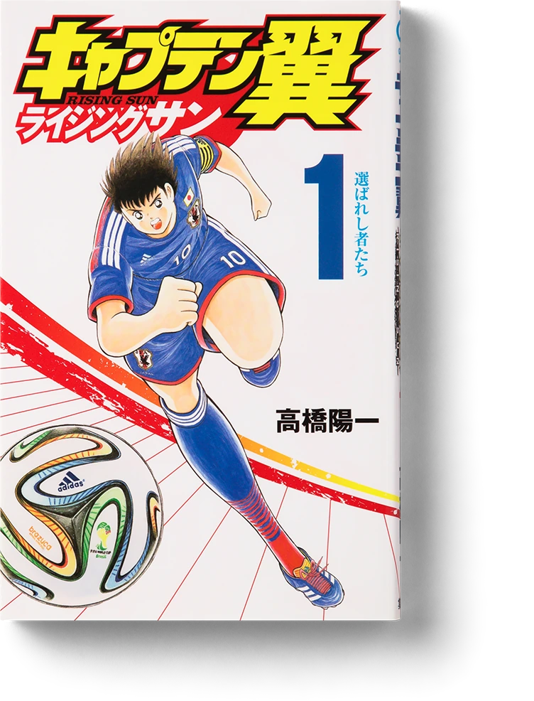
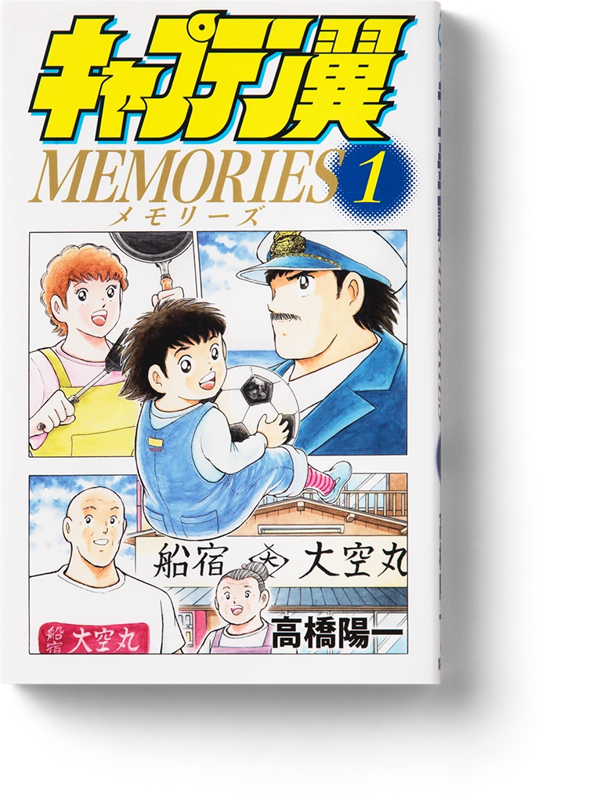
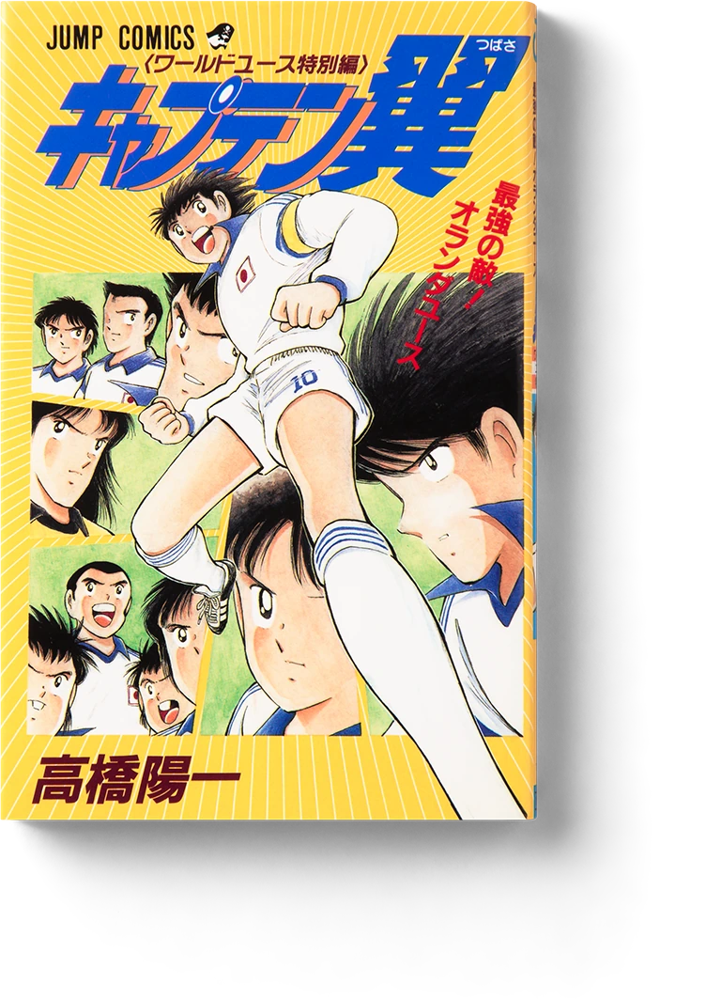

VOL.01
《队长小翼》
キャプテン翼 / Captain Tsubasa
少年大空翼搬到静冈县南葛市后，从小学、初中一路到 Jr. 国际青年大赛的成长记录。 与无数对手的激战与感人剧情…… 是此后大空翼翱翔世界、在日本奋战的「原点」与传说系列！

自 1981 年起在《周刊少年 Jump》开始连载的原作漫画系列，以及在连载外发表的读切·短篇作品。 战场一路从《Young Jump》《Grand Jump》延续至官方网站， 最新作《队长小翼 RISING SUN FINALS》以分镜稿形式在网络上连载中。
ORIGINAL
CAPTAIN TSUBASA COMICS
キャプテン翼 / Captain Tsubasa
少年大空翼搬到静冈县南葛市后，从小学、初中一路到 Jr. 国际青年大赛的成长记录。 与无数对手的激战与感人剧情…… 是此后大空翼翱翔世界、在日本奋战的「原点」与传说系列！
キャプテン翼 ワールドユース編 / Captain Tsubasa: World Youth
中学毕业、奔赴梦想之地巴西的翼，又以青年日本代表身份出战世青赛。面对层出不穷的新世界级对手， 翼一行在激战中过关斩将。与恩师罗伯特率领的最强巴西队之间的决战，结局究竟如何！？

キャプテン翼 ROAD TO 2002 / Captain Tsubasa: Road to 2002
翼转会西班牙豪门巴塞罗那。在全世界猛将云集之处，历经激烈的首发之争， 作为成年人、作为职业球员飞速成长。与新一代对手拿度尼的一战，成为日后被反复传颂的名场面！

キャプテン翼 GOLDEN-23 / Captain Tsubasa: Golden-23
以「黄金世代」组建奥运代表队。日向小次郎的恩师吉良教练率领的队伍， 在没有翼等海外组的纯国内阵容下出征亚洲预选赛。伴随新生力量的崛起，各选手在亚洲激战中实现巨大成长！

キャプテン翼 海外激闘編 IN CALCIO 日いづる国のジョカトーレ / Captain Tsubasa: In Calcio
追踪「猛虎」日向小次郎与「中场发动机」葵新伍在意大利成长的番外篇。 两人都从三级联赛俱乐部出发，为升级到更高联赛而拼搏！最终战是两人的正面对决，海外组的艰辛尽在其中！

キャプテン翼 海外激闘編 EN LA LIGA / Captain Tsubasa: En La Liga
巴塞罗那的翼与皇家马德里的拿度尼。两位在《ROAD TO 2002》中已然对决过的英雄， 为西班牙联赛冠军再次交锋！从巴西来到欧洲、成长蜕变的大空翼，转会第一年也迈向最高潮！

キャプテン翼 ライジングサン / Captain Tsubasa: Rising Sun
突破亚洲预选的奥运代表队，加上翼等海外组，以最强阵容出征马德里奥运！ 迪亚斯、施奈德之外，还有米迦勒这一新对手集结。在层出不穷的新必杀技中，目标直指日本梦寐以求的金牌！

キャプテン翼 ライジングサン FINALS / Captain Tsubasa: Rising Sun Finals
马德里奥运男子足球半决赛，日本 VS 西班牙。进入下半场，大空翼与米迦勒的一对一愈发白热化！！ 这是「纸质时代」的最后一部，也是作者高桥阳一以草稿形式在官方网站延续连载的最新篇章。

OTHER STORIES
ONE-SHOTS & SHORT COLLECTIONS
连载过程中穿插发表的读切作品与短篇集。 讲述各种角色与队伍番外故事的特别篇！
『キャプテン翼』 MEMORIES
若林源三的代名词「SGGK」的诞生秘话。大空翼搬到南葛市之前的少年时代等， 至今为止谁也不知道的《队长小翼》新事实，如今以怀旧的衍生读切作品呈现！

ボクは岬太郎 / Boku wa Misaki Taro
与翼组成「黄金组合」的岬太郎。身为画家的父亲一同在全日本辗转的岬家原委， 以及他不为人知的心情将一一揭示。收录读切《我是岬太郎》，另含《毕业―100M 跳高 2―》《BASUKE》！

『キャプテン翼』 ワールドユース特別編 最強の敵！オランダユース
收录「世青篇」中未描绘的热身赛。对手是号称欧洲最强的荷兰世青。 除了那场激战之外，还收录了南葛高中 VS 东邦学园全国高中足球锦标赛决赛这一难得的精彩比赛！

『キャプテン翼』 短編集 DREAM FIELD
汇集了由读者问卷选出的全明星阵容展开的「梦幻对决」等令粉丝垂涎的短篇集。 2000 年悉尼奥运、2002 年日韩世界杯、2006 年德国世界杯等， 在每个重大节点都描绘过本作，实存选手也登场！！